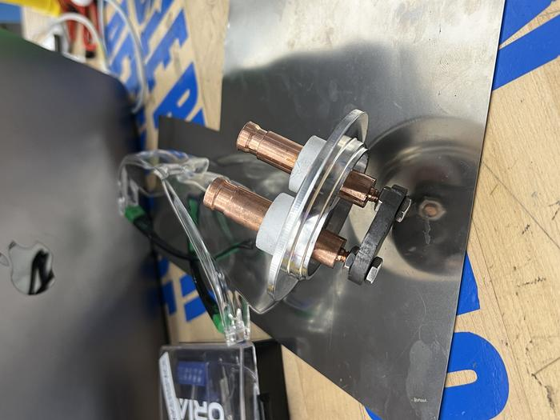
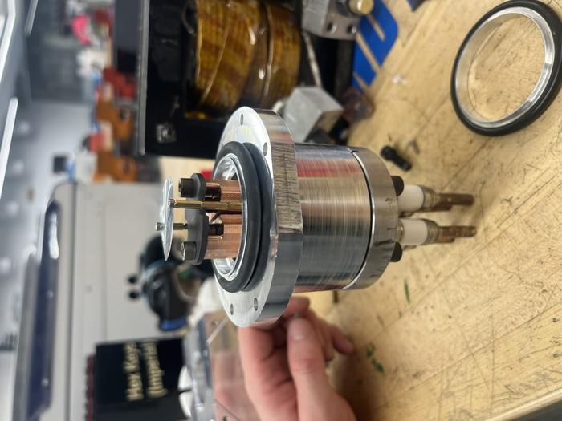
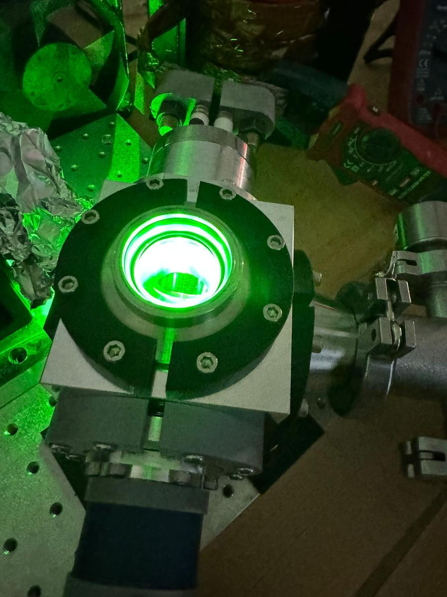
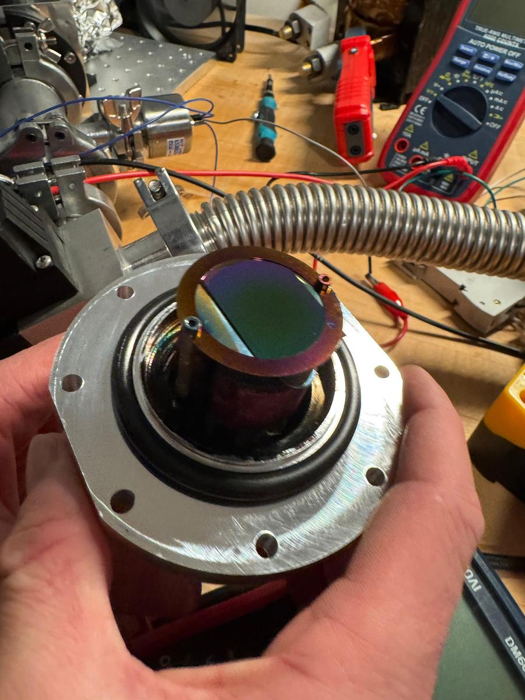

Substrate Heater
Hardware conception for advanced material science instrumentation.

This project was initiated with the greater goal of achieving Pulsed Laser Deposition (PLD). Working with the Hacker Foundry, our objective was to build a low-cost tool to deposit thin films with variable tunability.
In order to achieve PLD, high temperatures are required at the substrate to ensure good crystallization and high nucleation density of the produced films. While target temperatures for most PLD processes can reach up to 1000°C, we set our initial proof-of-concept goal at 800°C for this custom heater.

02. Initial Prototype & Limitations
Our initial design proved the concept but revealed critical thermal and electrical bottlenecks. On the positive side, the electric feed-through design was highly effective with a very low voltage drop, and the KF body maintained vacuum integrity perfectly.
However, the delrin components did not react well to the high temperatures once the graphite core reached 400°C. Furthermore, the overall voltage load wasn’t adequately concentrated on the graphite; even after adjusting the radius-to-thickness ratio, the graphite wasn’t dropping enough voltage to scale our temperatures higher.
Max Temp: 400°C (V1)
03. Electrical Overhaul
To reach 800°C, a new solution was needed. First, we lowered the overall system resistance to maximize power dissipation at the graphite. We recycled a 4-port electric feedthrough and joined two ports together, increasing the cross-sectional area and successfully dropping the resistance.
Second, we needed significantly more current. We built a custom high-current power supply using second-hand components, pairing a variac with a high-power transformer. By modifying the transformer winding to a 1:26 ratio, we were able to provide the optimal power required by the graphite core.
To finalize the assembly, a custom CF to KF adaptor was machined to position the graphite heating piece at the optimal distance from the target holder. Based on PLD literature, we calibrated this target-to-substrate distance to precisely 50 mm for maximum deposition efficiency.

